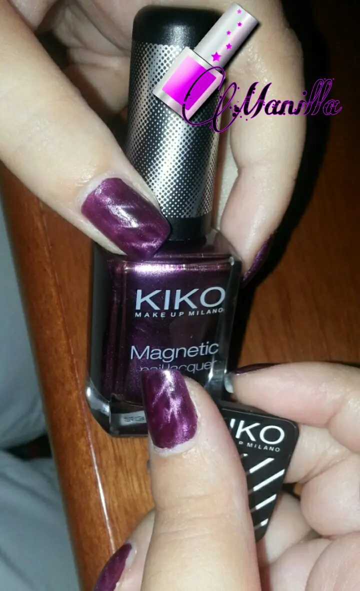

Proposta di luglio -Smalti Kiko Magnetic Nail Lacquer: nail art magnetica
Amiche mie questo luglio è arrivato con un ondata di caldo africano proprio. .dobbiamo solo puntare su docce a go go per stare bene ihihih
Infatti questo periodo non sto tanto pensando ai trucchi ma quanto ai smalti perché la voglia di truccarmi non c'è proprio. . Ci sciogliamo come gelato. .
E visto che ormai abbiamo preso questa tendenza a provare questi magneti, oggi voglio parlarvi dei magneti della Kiko. .
Ovvero lo Smalto Kiko Magnetic Nail Lacquer.
So che ne abbiamo parlato già nel post qui sotto ma ogni marca è a sé, ogni marca ha il diritto di essere provato perché non tutte le cose sono uguali. .
Lo smalto che vi faccio vedere è su una tonalità viola ed è bellissimo. .anche usato senza magnete. .
Prima di farvelo vedere però, volevo specificare che cos'è in realtà il magnete che utilizziamo per fare questi effetti sulle unghie. .
In realtà non è altro che una piccola calamita rettangolare. .ciò che aiuta la calamita è lo smalto magnetico che è composto da particelle magnetiche e appoggiando leggermente il magnete,lo smalto si sposta formando delle leggere righe parallele. .
Quindi non si può utilizzare la calamita con un qualsiasi smalto ma le due cose devono essere associate. .

Detto ciò il mio giudizio è al quanto buono per stesura e lucentezza, una cosa che non mi ha convinta molto, cosa che ho notato invece in quello dell'Avon, è la durata dello smalto. .dopo qualche giorno già inizia a sfaldarsi a meno che non passate un filo di top coat per sigillare. .
